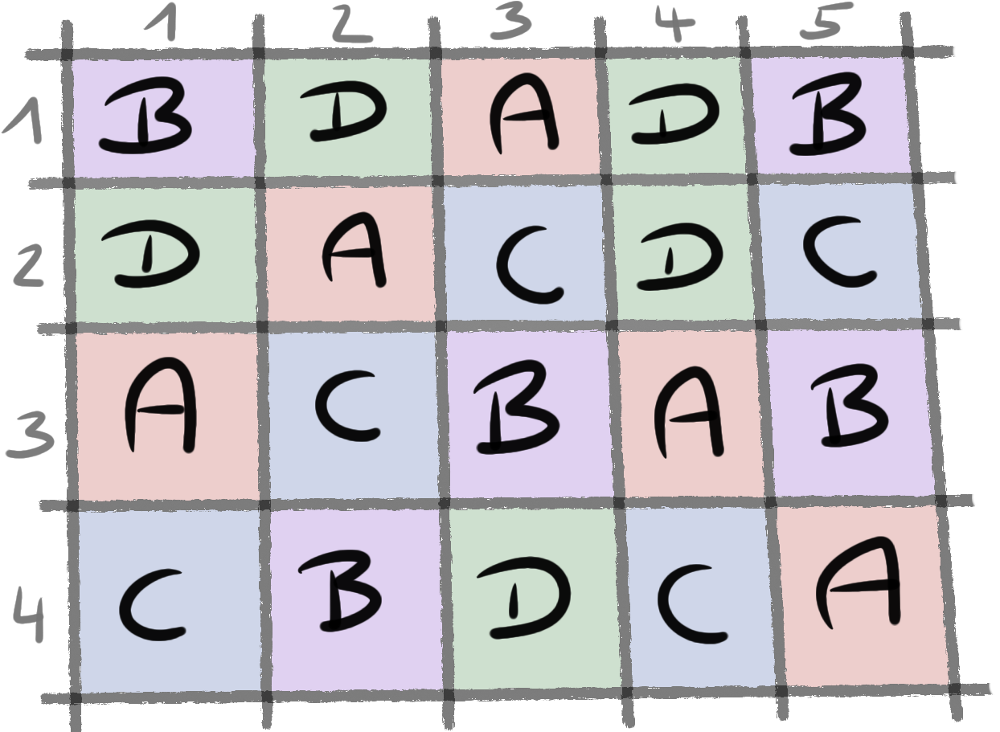
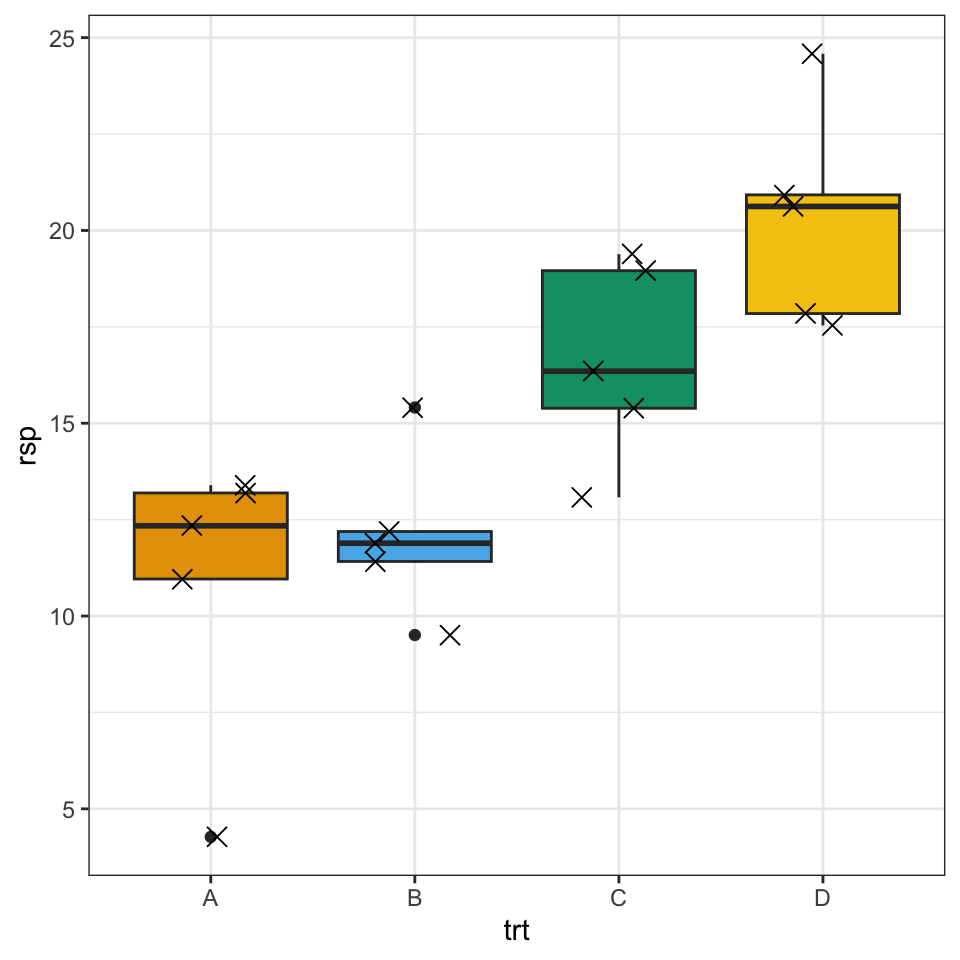
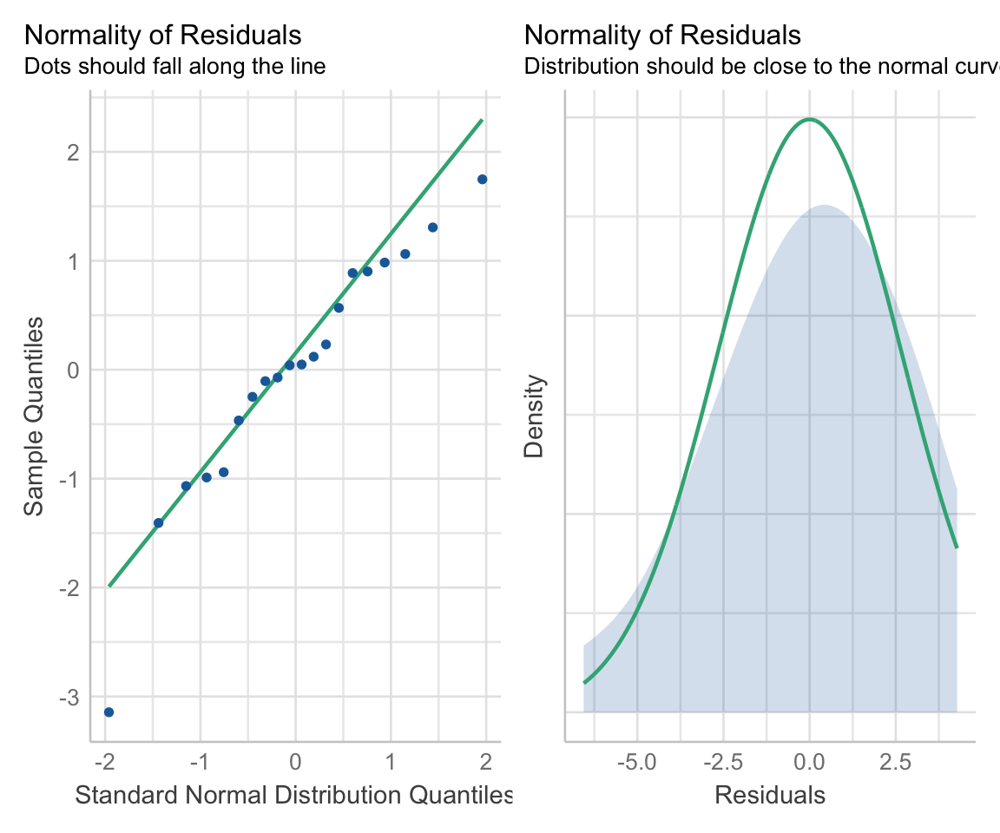
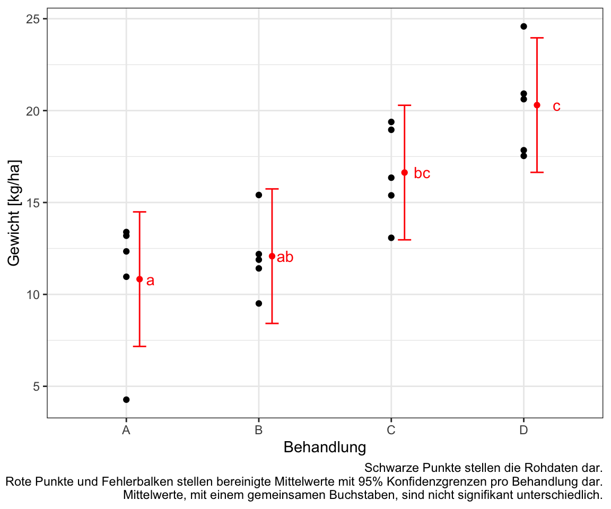
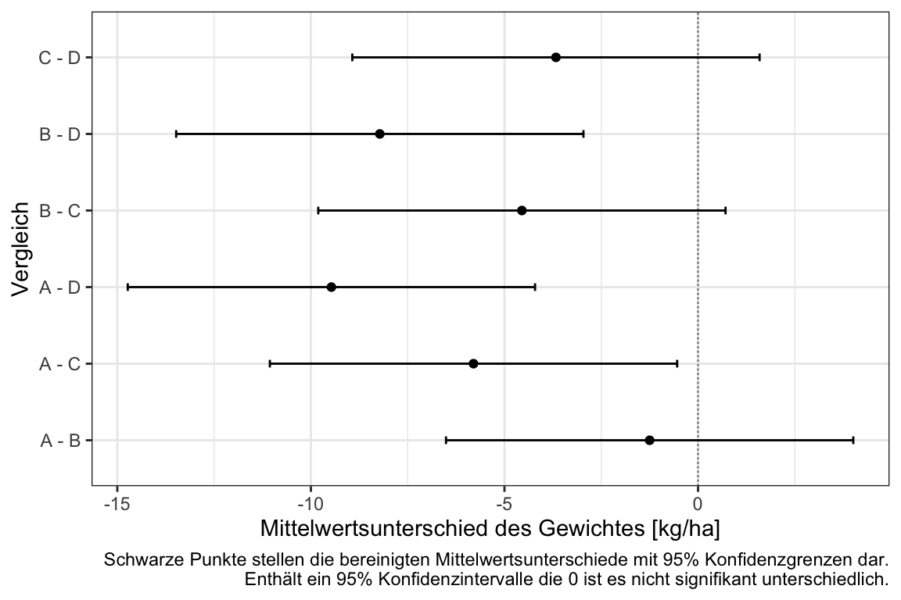

pacman::p_load(tidyverse, readxl, parameters,
effectsize, magrittr, multcomp,
multcompView, rcompanion, rstatix,
emmeans, see, performance, fs,
janitor, broom, scales, knitr,
conflicted)
## resolve some conflicts with same function naming
conflicts_prefer(dplyr::select)
conflicts_prefer(dplyr::filter)
conflicts_prefer(effectsize::eta_squared)
conflicts_prefer(magrittr::set_names)17 Complete randomized design
Version vom January 13, 2024 um 16:40:05
Wir wollen folgende R Pakete in diesem Kapitel nutzen.
17.1 Complete randomized design (CRD)
Das komplette randomizierte Design (eng. complete randomized design) ist das simpleste Felddesign was wir anzubieten haben. Wir haben einen Stall oder ein Feld oder einen Tisch und unterteilen diesen Raum zufällig in Untereinheiten. Auf oder in jeder Untereinheit bringen wir dann eine Behandlung aus.
Wir haben einen Tisch und stellen Töpfe mit Pflanzen auf den Tisch. Jeder Topf erhält zufällig eine Behandlung. Wir haben gleich viele Töpfe mit Pflanzen für jede Behandlung.
Wir haben einen Stall mit Buchten für Schweine. Jede Bucht erhält eine zufällige Behandlung. Wir haben gleich viele Buchten für jede Behandlung.
Wir haben ein Feld und erschaffen Parzellen auf dem Feld. Auf jeder Parzelle wird zufällig eine Variante ausgebracht. Wir haben geich viele Parzellen für jede Variante.
Schauen wir uns das Complete randomized design einmal an einem konkreten Beispiel an. Wir nutzen dafür einen Faktor mit der Behandlung. Die Behandlung hat vier Level mit den einzelnen Leveln \(A\), \(B\), \(C\) und \(D\).
17.1.1 Visualisierung
In Abbildung 17.1 sehen wir die Visualisierung unseres Versuches. Wir haben einen großen Raun in dem sich zufällig die Level der Behandlung drauf verteilen. Hierbei ist es wichtig zu verstehen, dass die Anordnung rein zufällig ist. Wir sehen, dass jedes Level der Behandlung mit \(n = 5\) auf das Feld aufgebracht wurde. Wir haben also ein balanciertes Design mit \(N = 20\) Beobachtungen. Wir könnten hier auch einen Tisch mit \(n=20\) Pflanzentöpfen vorliegen haben oder einen Stall mit \(n = 20\) Buchten.

17.1.2 Daten
Im Folgenden bauen wir uns die Daten für das Complete randomized design. Dafür nuten wir die Funktion rnorm(). Die Funktion rnorm() erlaubt es aus einer Normalverteilung n Beobachtungen mit einem Mittelwert mean und einer Standardabweichung sd zu ziehen. Wir erschaffen uns so vier Behandlungsgruppen \(A\) bis \(D\) mit jeweils unterschiedlichen Mittelwerten von \(\bar{y}_A = 10\), \(\bar{y}_B = 12\), \(\bar{y}_C = 16\) und \(\bar{y}_D = 20\) sowie homogenen Varianzen mit \(s_A = s_B = s_C = s_D = 2\). Jede Behandlung hat \(n = 5\) Beobachtungen. Wir haben also ein balanziertes Design vorliegen.
set.seed(20220916)
crd_tbl <- tibble(A = rnorm(n = 5, mean = 10, sd = 2),
B = rnorm(n = 5, mean = 12, sd = 2),
C = rnorm(n = 5, mean = 16, sd = 2),
D = rnorm(n = 5, mean = 20, sd = 2)) %>%
gather(key = trt, value = rsp) %>%
mutate(trt = as_factor(trt))Schauen wir uns einmal die Daten an, die wir in R erhalten. Das Objekt crd_tbl ist ein tibble in Long-Format nach der Anwendung der Funktion gather(). Wir haben auch die Spalte trt für die Behanldung als Faktor umgewandelt.
crd_tbl# A tibble: 20 × 2
trt rsp
<fct> <dbl>
1 A 12.3
2 A 11.0
3 A 13.4
4 A 13.2
5 A 4.27
6 B 12.2
7 B 11.4
8 B 15.4
9 B 9.51
10 B 11.9
11 C 13.1
12 C 15.4
13 C 16.3
14 C 19.0
15 C 19.4
16 D 20.9
17 D 17.8
18 D 20.6
19 D 24.6
20 D 17.5 Wir haben also \(N = 20\) Beobachtungen vorliegen. Wir immer ist es schwer eine Datentabelle zu erfasen. Daher schauen wir uns die Daten einmal in Abbildung 17.2 als Boxplots an. Wir wolllen uns noch die Punkte zusätzlich anzeigen lassen. bei der geringen Anzahl an Beobachtungen wäre ein Dotplot oder ein Scatterplot auch eine Möglichkeit.
ggplot(crd_tbl, aes(trt, rsp, fill = trt)) +
theme_bw() +
geom_boxplot() +
geom_jitter(width = 0.2, shape = 4, size = 3) +
theme(legend.position = "none") +
scale_fill_okabeito() 
Wir erinnern uns, dass die Daten alle varianzhomogen und normalverteilt sind. Wir haben die Daten so erschaffen. Dennoch wirken die Boxplots so, als würde teilweise eine schiefe Verteilung vorliegen. Bei so wenigen Beobachtungen ist es immer schwer, für oder gegen eine Verteilung zu argumentieren. Wir bleiben bei einer Normalverteilung, wenn wir glauben, dass das \(y\) approimativ normalverteilt ist. Wir schreiben dann, dass wir ein normalverteiltes \(y\) annehmen.
17.1.3 Modellierung
Im Folgenden wollen wir die Daten modellieren. Das heist wir wollen eine Linie durch eine multidimensionale Punktewolke zeichnen. Daher auch lineares Modell oder eben durch die Funktion lm() in R für linear model. Wir nutzen das Paket parameters und die Funktion model_parameters() um uns die Parameter des Modells auszugeben. Wir könnten auch die Funktion tidy() nutzen, aber wir erhalten durch die Funktion model_parameters() etwas mehr Informationen und bessere Spaltenüberschriften.
Wir bauen das Modell in folgender Form. Wir haben ein numerisches Outcome \(y\) sowie einen Faktor \(f_1\).
\[ y \sim f_1 \]
Nun können wir das abstrakte Modell in die Daten übersetzen und erhalten folgendes Modell.
\[ rsp \sim trt \]
Das heist, unsere numerische Variable rsp hängt ab von unserer faktoriellen Variable trt. Wir müssen immer wissen, wie die Spaltennamen in unserem Datensatz crd_tbl lauten sonst kann R die Spalten nicht finden.
fit_crd <- lm(rsp ~ trt, crd_tbl)
fit_crd %>% model_parameters()Parameter | Coefficient | SE | 95% CI | t(16) | p
------------------------------------------------------------------
(Intercept) | 10.83 | 1.30 | [ 8.07, 13.59] | 8.33 | < .001
trt [B] | 1.25 | 1.84 | [-2.65, 5.15] | 0.68 | 0.506
trt [C] | 5.80 | 1.84 | [ 1.90, 9.70] | 3.15 | 0.006
trt [D] | 9.47 | 1.84 | [ 5.57, 13.37] | 5.15 | < .001
Uncertainty intervals (equal-tailed) and p-values (two-tailed) computed
using a Wald t-distribution approximation.Überlege mal, was die Spalte Coefficient aussagen möchte. Wir erhalten den (Intercept) mit \(10.38\) und damit den MIttelwert der Gruppe \(A\). In den folgenden Zeilen sind die Änderungen zu dem (Intercept) und damit zu der Gruppe \(A\) dargestellt. Da wir nur eine sehr kleine Anzhl an Beoabchtungen haben, haben wir hier auch Abweichungen zu den voreingestellten Mittelwerten und Standardabweichungen. Wir schauen uns ja auch nur eine Realisierung von möglichen Daten \(D\) an. Wir sehen, dass alle Koeffizienten signifikant und damit unterschiedlich von der Null sind. Der \(p\)-Wert ist kleiner als das Signiifkanzniveau von \(\alpha\) gleich 5%.
Wir können jetzt nochmal überprüfen, ob die Residuen die Annahme der Varianzhomogenität erfüllen.
fit_crd %>% check_homogeneity()OK: There is not clear evidence for different variances across groups (Bartlett Test, p = 0.737).Sowie ob die Residuen normalverteilt sind.
fit_crd %>% check_normality()OK: residuals appear as normally distributed (p = 0.620).Da wir ja hiermit nur eine Zeile Text produziert haben und darübr hinaus wir gerne uns Dinge anschauen, können wir auch die Residuen einmal visualisieren. In Abbildung 17.3 sehen wir den QQ-Plot der Residuen sowie die Verteilung unserer Residuen in einem Desnityplot. Wir sehen, dass die Residuen einer Normalverteilung folgen.
check_model(fit_crd, check = c("qq", "normality"))
Wunderbar. Wir können jetzt eine Varianzanalyse und dann eine Mittelwertsvergleich durchführen. Achtung, wir können uns hier auch etwas in die Ecke testen. Wenn wir nur lange genug neue Daten generieren, werden wir irgendwann auch einen Datensatz finden, der die Varianzhomogenität und die Normalverteilung ablehnt. Das liegt in der Theorie des statistischen Testens sowie der kleinen Fallzahl verborgen. Deshalb können wir im Zweifel gerne einmal deine Vortests in dem R Tutorium oder in einer statistischen Beratung diskutieren.
17.1.4 Varianzanalyse und Mittelwertsvergleich
Die einfaktorielle Varianzanalyse ist ziemlich einfach und ergibt sich fast von alleine. Wir nehmen das Objekt des Modells und pipen das Modell in die Funktion anova(). Wir lassen uns dann wieder die Modellparameter der ANOVA widergeben.
res_anova <- fit_crd %>%
anova()
res_anova %>% model_parameters()Parameter | Sum_Squares | df | Mean_Square | F | p
-----------------------------------------------------------
trt | 283.24 | 3 | 94.41 | 11.16 | < .001
Residuals | 135.35 | 16 | 8.46 | |
Anova Table (Type 1 tests)Wir sehen, dass der Faktor Behandlung signifkant ist, da der \(p\)-Wert kleiner ist als das Signifkanzniveau \(\alpha\) gleich 5%. Wir können damit die Nullhypothese ablehnen, wir haben zumindestens einen paarweisen Gruppenunterschied in der Behandlung. Welchen wissen wir nicht, dafür machen wir dann die paarweisen Vergleiche. Eigentlich können wir uns in diesem simplen Fall die ANOVA schhenken und gleich den Mittelwertsvergleich rechnen. Aber das es Usus ist und auch in vielen Abschlussarbeiten verlangtt wird, machen wir hier es einfach mal gleich mit.
Jetzt brauchen wir nur noch die Effektstärke der ANOVA, also wieviel Varianz eigentlich der Faktor Behandlung erklärt. Dfür nutzen wir die Funktion eta_squared() aus dem Paket effectsize.
res_anova %>% eta_squared(partial = FALSE)# Effect Size for ANOVA (Type I)
Parameter | Eta2 | 95% CI
-------------------------------
trt | 0.68 | [0.38, 1.00]
- One-sided CIs: upper bound fixed at [1.00].Mit einem \(\eta^2\) von \(0.86\) wissen wir, dass 86% der Varianz von dem Faktor Behandlung erklärt wird. Das wundert uns nicht, denn wir haben ja nur den Faktor Behandlung in unseren Daten aus denen sich unser Outcome ergibt.
Nachdem wir kurz die ANOVA gerechnet haben, wollen wir noch den Mittelwertsvergleich rechnen. Wir nutzen dazu das Paket emmeans. Wir müssen der Funktion emmeans() ein Objekt aus einem Modell übergeben und der Funktion mitteilen, was der Faktor ist mit dem der Vergleich gerechnet werden soll. Wir haben hier den Faktor trt vorliegen und wollen einen parweisen Vergleich über alle Level des Faktors rechnen.
res_crd <- fit_crd %>%
emmeans(~ trt) Wir haben die Ausgabe der Funktion emmeans() in dem Objekt res_crd gespeichert und nutzen das Objekt zuerst um einmal die Ausgabe für das comapct letter display zu erhalten. Als Adjustierung des \(\alpha\) Fehlers nutzen wir die Adjustierung nach Bonferroni. Es sind auch andere Adjustierungen möglich, aber aus Gründen der Einfachheit nehmen wir hier mal den Klassiker der Adjustierung. Je nach Fragestellung gibt es sicherlich auch eine bessere Alternative für Bonferroni.
res_crd_cld <- res_crd %>%
cld(adjust = "bonferroni", Letters = letters) %>%
tidy() %>%
select(trt, estimate, conf.low, conf.high, .group) %>%
mutate(across(where(is.numeric), round, 2))Warning: There was 1 warning in `mutate()`.
ℹ In argument: `across(where(is.numeric), round, 2)`.
Caused by warning:
! The `...` argument of `across()` is deprecated as of dplyr 1.1.0.
Supply arguments directly to `.fns` through an anonymous function instead.
# Previously
across(a:b, mean, na.rm = TRUE)
# Now
across(a:b, \(x) mean(x, na.rm = TRUE))Nachdem wir noch ein wenig gerundet haben und die Spalten passend gewählt, erhalten wir dann folgende Ausgabe.
res_crd_cld # A tibble: 4 × 5
trt estimate conf.low conf.high .group
<chr> <dbl> <dbl> <dbl> <chr>
1 A 10.8 7.17 14.5 " a "
2 B 12.1 8.42 15.7 " ab "
3 C 16.6 13.0 20.3 " bc"
4 D 20.3 16.6 24.0 " c"Wir nutzen die Ausgabe res_crd_cld direkt in der Abbildung 17.4 um uns das compact letter display zusammen mit den Daten und den entsprechenden 95% konfidenzintervallen anzeigen zu lassen. Der Code ist etwas länger, da wir hier verschiedene Schichten von einem geom übereinander legen müssen.
ggplot() +
theme_bw() +
geom_point(data = crd_tbl, aes(x = trt, y = rsp, fill = trt)) +
geom_text(data = res_crd_cld,
aes(x = trt , y = estimate, label = .group),
position = position_nudge(x = 0.2), color = "red") +
geom_errorbar(data = res_crd_cld,
aes(ymin = conf.low, ymax = conf.high, x = trt),
color = "red", width = 0.1,
position = position_nudge(x = 0.1)) +
geom_point(data = res_crd_cld,
aes(x = trt , y = estimate),
position = position_nudge(x = 0.1), color = "red") +
theme(legend.position = "none") +
labs(x = "Behandlung", y = "Gewicht [kg/ha]",
caption = "Schwarze Punkte stellen die Rohdaten dar.
Rote Punkte und Fehlerbalken stellen bereinigte Mittelwerte mit 95% Konfidenzgrenzen pro Behandlung dar.
Mittelwerte, mit einem gemeinsamen Buchstaben, sind nicht signifikant unterschiedlich.")
Wi sehen an dem compact letter display, dass sich die Behandlung \(A\) von der Behandlung \(B\), \(C\) und \(D\) unterscheidet. Die Behandlung \(B\) und \(C\) sind gleich. Die Behandlung \(C\) unterschdeit sich von all den anderen Behandlungen. Wir erinnern uns, wenn die Buchstaben in dem compact letter display gleich sind, dann können wie die Nullhypothese für diese Vergleiche nicht ablehnen. Wir haben keinen signifikanten Unterschied vorliegen.
Nun ist es so, dass wir meistens noch die \(p\)-Werte für die paarweisen Vergleich sowie die 95% Konfidenzintervalle darstellen wollen. Wir nutzen dafür die Funktion contrast() aus dem Paket emmeans. Danach müssen wir noch Spalten auswählen und die \(p\)-Werte über die Funktion pvalue() aus dem Paket scales schöner formatieren. Wir erhalten dann das Objekt res_crd_tbl.
res_crd_tbl <- res_crd %>%
contrast(method = "pairwise") %>%
tidy(conf.int = TRUE) %>%
mutate(p.value = pvalue(adj.p.value),
across(where(is.numeric), round, 2)) %>%
select(contrast, estimate, p.value,
conf.low, conf.high) In dem Objekt res_crd_tbl finden wir dann die \(p\)-Werte für alle paarweisen Vergleiche sowie die 95% Konfidenzintevalle.
res_crd_tbl# A tibble: 6 × 5
contrast estimate p.value conf.low conf.high
<chr> <dbl> <chr> <dbl> <dbl>
1 A - B -1.25 0.903 -6.51 4.01
2 A - C -5.8 0.028 -11.1 -0.54
3 A - D -9.47 <0.001 -14.7 -4.21
4 B - C -4.55 0.103 -9.81 0.71
5 B - D -8.22 0.002 -13.5 -2.96
6 C - D -3.67 0.231 -8.93 1.59Hier sehen wir dann die \(p\)-Werte für alle paarweisen Vergleiche und können dann die Entscheidung gegen die Nullhypothese für jeden der Kontraste einmal durchführen. Wir sehen, dass wir für alle Vergleiche die Nullhypothese ablehnen können, bis auf den Vergleich zwischen der Behandlung \(B\) und der Behandlung \(C\).
In der Abbildung 17.5 sehen wir die 95% Konfidenzintervalle für alle Vergleiche einmal dargestellt. Da wir es hier mit einem Mittelwertsvergleich zu tun haben, ist die Entscheidungsregel gegen die Nullhyppthese, dass wir ein signifikantes Konfidenzintervall vorliegen haben, wenn die Null nicht im Konfidenzintervall enthalten ist.
ggplot(res_crd_tbl, aes(contrast, y=estimate, ymin=conf.low, ymax=conf.high)) +
geom_hline(yintercept=0, linetype="11", colour="grey60") +
geom_errorbar(width=0.1) +
geom_point() +
coord_flip() +
theme_bw() +
labs(x = "Vergleich", y = "Mittelwertsunterschied des Gewichtes [kg/ha]",
caption = "Schwarze Punkte stellen die bereinigten Mittelwertsunterschiede mit 95% Konfidenzgrenzen dar.
Enthält ein 95% Konfidenzintervalle die 0 ist es nicht signifikant unterschiedlich.")